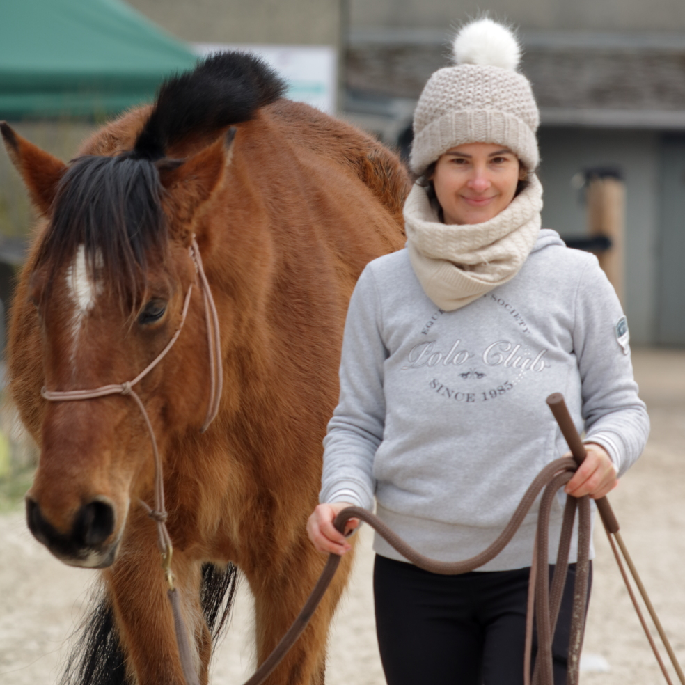
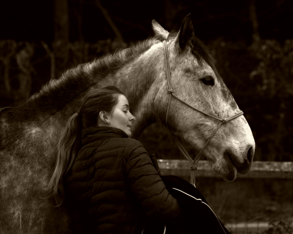
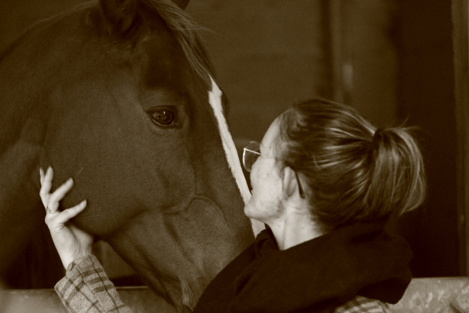

Prestations photographiques équestres
Capturer la complicité entre cavalier et cheval
Je propose des séances photo en décalé, avec un véritable travail de post-traitement. Ma sensibilité artistique, habituellement dédiée à la photographie intime de la nature, est mise au service de votre complicité avec votre cheval.
Nos formules
Réseaux Sociaux
8 à 12 photos retouchées, optimisées pour Instagram et Facebook
Essentiel
Shooting privé – séance dédiée
45 à 60 minutes
15 à 20 photos retouchées
1 tirage 13×18 cm offert
Signature
Shooting privé – séance dédiée
90 minutes
25 à 35 photos retouchées
2 tirages 13×18 cm + 1 tirage 20×30 cm offerts
Photo à l’unité
Une belle photo retouchée de votre choix
Idéal pour les petits budgets ou les enfants
Dernières complicités
Quelques exemples de séances réalisées récemment




Comment ça se passe ?
Nous convenons ensemble d’un créneau en décalé sur votre lieu de pratique. Après la séance, je sélectionne et retravaille les meilleures images avec soin. Vous recevez ensuite une galerie privée pour faire votre choix.